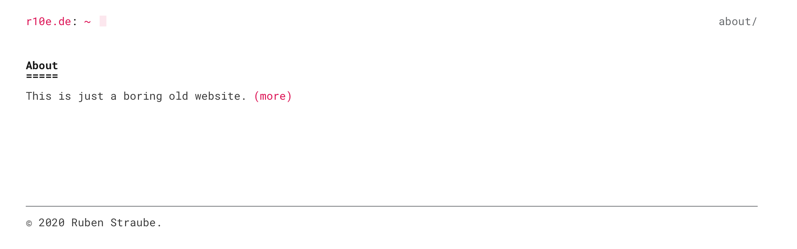

I’ll be honest: I’ve always been impressed by people who just quickly throw together a website for a thing. Although I’ve been a professional software developer for about seven years now, I’ve never done so. Recently, I acquired this domain to use with mails, had some time on my hand and decided I’d finally give it a go.
My own experience with building websites is twofold: On the one hand, I used to write a fair amount of HTML as a teenager, then building sites with frames and “Under Construction” gifs. Then, as an IT professional, I worked on full-on web services, with websites that were just the user-facing part of huge systems, and that were created as part of a build process that took fairly long and made it hard to isolate the website generation part.
So I always knew that it’s neither magic nor rocket science, but I’ve never had a reason to take an afternoon and just do it.
Fast forward to now: It’s the summer of 2020, I’m in a sabbatical and there’s a global pandemic. If I’m gonna do anything now, it might as well be something productive.
So here’s not a guide, but rather a step-by-step diary-like description of what hurdles I encountered. In the best case someone will read this and better emphasise with themselves when encountering similar problems as a professional developer when setting up a ridiculously simple website. In the worst case, someone has a laugh at my expense, which, being used to these setbacks, I had myself.
Hosting on GitHub-Pages was a no-brainer for me. It’s free and pretty simple, why would I choose something else?
I knew about static site generators. I had somewhat used Jekyll before but heard good things about Hugo, so I decided to try the latter.
Setting up Hugo was fairly easy. I was taken aback by it being written in Go, a language I neither know nor have incentive to learn, but there’s basically no Go knowledge necessary, and the templating is somewhat intuitive. Just following the Quick Start worked great!
As you can see, I chose the (to a techie) beautiful Console theme by Marcin Mierzejewski instead of the one used in the quick start guide, and immediately did some changes. Running it locally still worked like a charm.
I was initially a bit annoyed by having the complete theme repository inside my own repository. This annoyance was quickly gone, when I realised two things:
It took me a while to realise I also had to copy the theme-specific configuration to my config.toml, but that’s fairly obvious now thinking about it.
As described, I had started with Hugo’s Quick Start guide and moved on to the Host on GitHub guide.
The way Hugo works is that it’ll build your site and put it in the public/ directory. For hosting on GitHub, the guide creates that folder as yet another Git submodule to be the very repository to be hosted on pages.
For some reason, that didn’t work. The command didn’t fail visibly, but there was nothing added in .gitmodules and public/ didn’t behave as one.
After quite a while of being more and more annoyed at submodules, I decided to redo everything with a copy of my repository. There, I did get a proper error, and it turned out I had to remove the path from the Git caches first. Why I didn’t see that error before, and why the folder was in the caches in the new repository, I can’t say, but that’s the way it is sometimes.
With the deployment now working as it should, I deployed and went to my Site’s URL. To my dismay, I found a 404. The repository did have files though, so changed the path to index.html:
It’s there, but not looking well.
Looking in the networking tab, I found that the browser tried to fetch the CSS from example.org. Yeah, of course. So, update the baseURL in the config.toml, and here we go, GitHub shows it as it should now:

The screenshot looks fine, but opening Firefox’s Network tab, I saw that some requests 404’d, namely the fonts, that the Console theme provides itself. While they are provided by my OS and hence didn’t need to be downloaded, it’s still a bad look.
So what happened? I initially hosted this site on https://r10e.github.io/r10e, as opposed to Hugo’s GitHub-Pages-Tutorial, which would have me host it at my base url (i.e. without the /r10e at the end). This seems not to be foreseen by Hugo and by Hugo theme developers (although the theme I’m using is fairly new at the time of writing, and who am I to not forgive bugs).
The console.css wanted to get the fonts from https://r10e.github.io/hugo-theme-console/font/RobotoMono-Italic.ttf, which was missing the r10e/ path after github.io/.
I have a vague preference of absolute paths over relative paths, but this seems like the perfect moment to use a relative one. Luckily, the Console theme’s author agreed and promptly accepted my pull request. This means that I can use the theme as is without further modifications on my side.
So voilà, here’s the site. I did some styling modifications on the way, which I might document for me as well. Don’t stay tuned for updates, it won’t be worth it.
It took me much longer to do this write-up than doing what I described, but sometimes it’s worth to document every tiny misstep you make along the way to remind yourself that you’ll be able to deal with bigger ones.